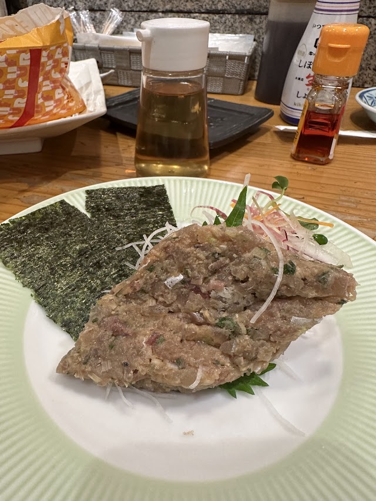
| 営業時間 | 月・火・水・木・金・土 11:30〜14:00, 16:30〜23:00 |
|---|---|
| 定休日 | 日曜 |
| 住所 | 千葉県千葉市中央区新千葉１丁目７−３ ＣＳＢ新千葉ビル 102 |
| 予約 | 可 — ☎ 043-302-5511 |
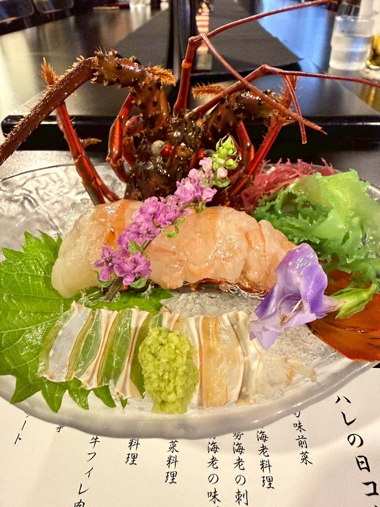
| 営業時間 | 月・火・水・木・金・土 17:00〜22:00 |
|---|---|
| 定休日 | 日曜 |
| 住所 | 千葉県千葉市中央区栄町１６−２ ターミナルビル 1階 |
| 予約 | 可 — ☎ 043-225-6688 ／ 公式サイト |
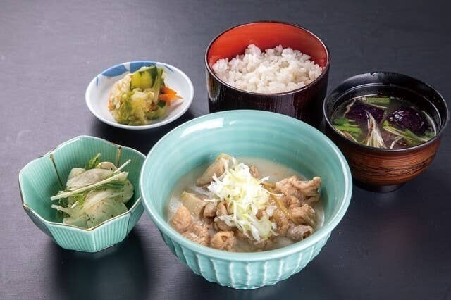
| 営業時間 | 月・火・水・木・金・土 11:30〜14:00, 16:30〜23:00 |
|---|---|
| 定休日 | 日曜 |
| 住所 | 千葉県千葉市中央区新千葉１丁目７−３ ＣＳＢ新千葉ビル 101 |
| 予約 | 可 — ☎ 043-301-6611 ／ 公式サイト |
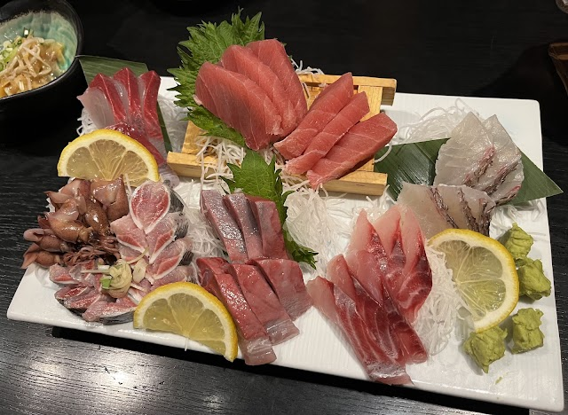
| 営業時間 | 月・火・水・木 11:30〜14:00, 16:00〜22:30 ／ 金 11:30〜14:00, 16:00〜23:00 ／ 土 11:30〜23:00 |
|---|---|
| 定休日 | 日曜 |
| 住所 | 千葉県千葉市中央区富士見１丁目１０−４ 1F |
| 予約 | 可 — ☎ 043-202-2211 ／ 公式サイト |
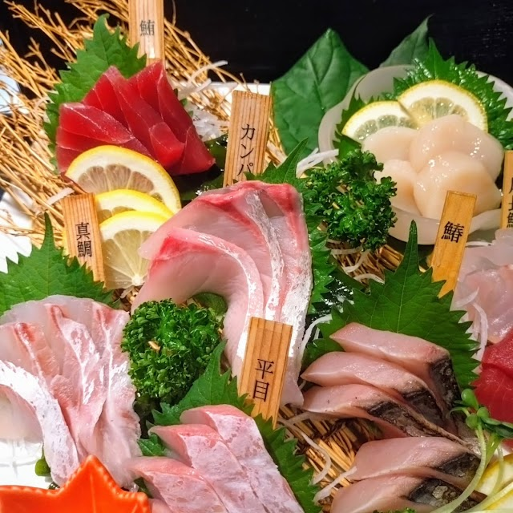
| 営業時間 | 月・火・水・木・金・土 11:30〜15:00, 17:00〜23:00 |
|---|---|
| 定休日 | 日曜 |
| 住所 | 千葉県千葉市中央区富士見２丁目５−１５ 塚本第3ビル B1 |
| 予約 | 可 — ☎ 043-225-8481 ／ 公式サイト |
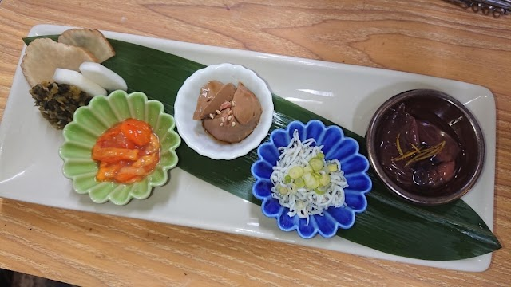
| 営業時間 | 月・火・水・木・金・日 17:00〜23:00 |
|---|---|
| 定休日 | 土曜 |
| 住所 | 千葉県千葉市中央区長洲１丁目２８−３ 2階 |
| 予約 | 可 — ☎ 043-202-0061 ／ 公式サイト |
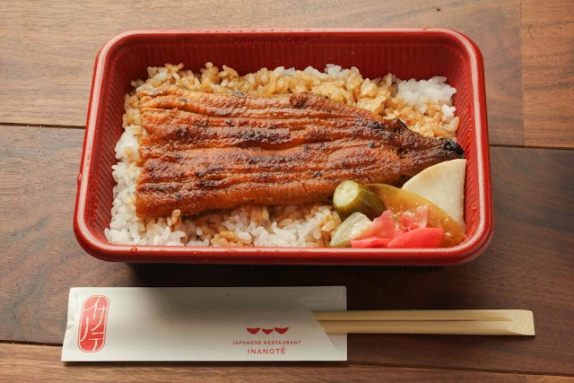
| 営業時間 | 月・火・木・金・土・日 17:00〜23:00 |
|---|---|
| 定休日 | 水曜 |
| 住所 | 千葉県千葉市中央区中央１丁目１−８ 中央28ビル |
| 予約 | 可 — ☎ 043-222-7607 ／ 公式サイト |
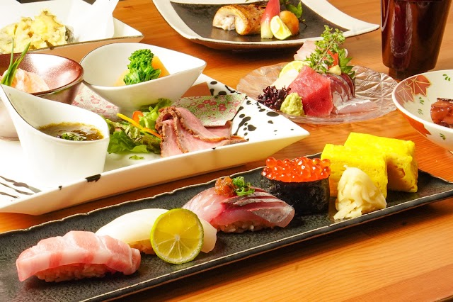
| 営業時間 | 月・火・水・木・金・土・日 11:45〜14:30, 17:00〜22:30 |
|---|---|
| 定休日 | なし(要最終確認) |
| 住所 | 千葉県千葉市中央区新町１９−１０ フクロウビル 1-B |
| 予約 | 可 — ☎ 043-215-7473 ／ 公式サイト |
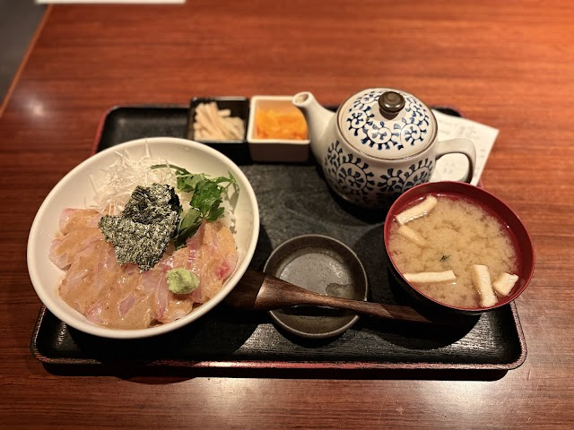
| 営業時間 | 月・火・水・木・日 11:00〜22:00 ／ 金・土 11:00〜23:00 |
|---|---|
| 定休日 | なし(要最終確認) |
| 住所 | 千葉県千葉市稲毛区小仲台２丁目４−１１ 川島東ビル B1Ｆ |
| 予約 | 可 — ☎ 043-207-6065 ／ 公式サイト |
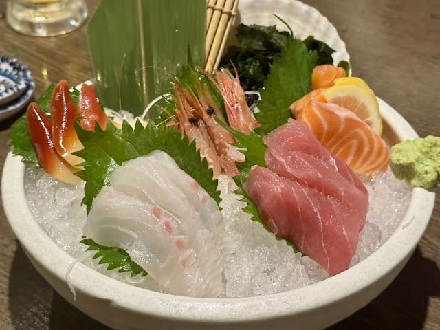
| 営業時間 | 月・火・水・木・日 14:00〜0:00 ／ 金・土 14:00〜2:00 |
|---|---|
| 定休日 | なし(要最終確認) |
| 住所 | 千葉県千葉市美浜区ひび野１丁目９ スーク海浜幕張 3F |
| 予約 | 可 — ☎ 090-4242-6702 ／ 公式サイト |
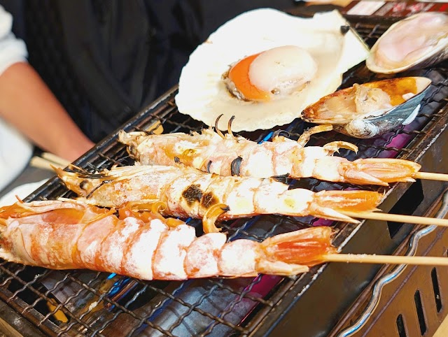
| 営業時間 | 月・水・木 17:00〜23:00 ／ 金・土 16:00〜23:30 ／ 日 16:00〜23:00 |
|---|---|
| 定休日 | 火曜 |
| 住所 | 千葉県千葉市若葉区西都賀３丁目２−９ 千脇ビル 1階 |
| 予約 | 可 — ☎ 050-5486-9261 ／ 公式サイト |
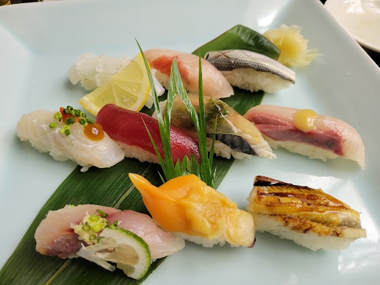
| 営業時間 | 月・火・木・金・土 11:00〜15:00, 17:00〜22:00 ／ 日 11:00〜15:00, 17:00〜21:30 |
|---|---|
| 定休日 | 水曜 |
| 住所 | 千葉県千葉市美浜区高洲１丁目１６−２５ |
| 予約 | 可 — ☎ 043-246-8126 ／ 公式サイト |
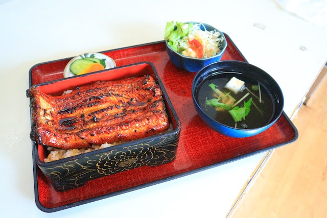
| 営業時間 | 11:30〜14:30／17:00〜21:30 |
|---|---|
| 定休日 | 年中無休 |
| 住所 | 千葉県千葉市中央区道場北町３１７−４ |
| 予約 | 可 — ☎ 043-233-4048 |
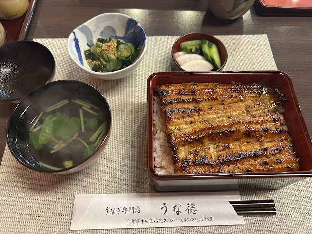
| 営業時間 | 月・木・金・土・日 11:15〜14:00, 17:30〜20:00 |
|---|---|
| 定休日 | 火・水曜 |
| 住所 | 千葉県千葉市中央区祐光２丁目１２−１ 102 |
| 予約 | 可 — ☎ 043-225-5763 ／ 公式サイト |
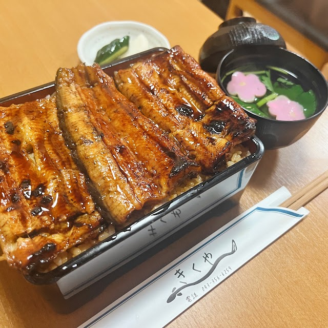
| 営業時間 | 火・水・木・金・土・日 11:00〜15:00, 16:00〜20:00 |
|---|---|
| 定休日 | 月曜 |
| 住所 | 千葉県千葉市花見川区検見川町３丁目３９７−１ コーポたくみ |
| 予約 | 可 — ☎ 043-356-6259 ／ 公式サイト |
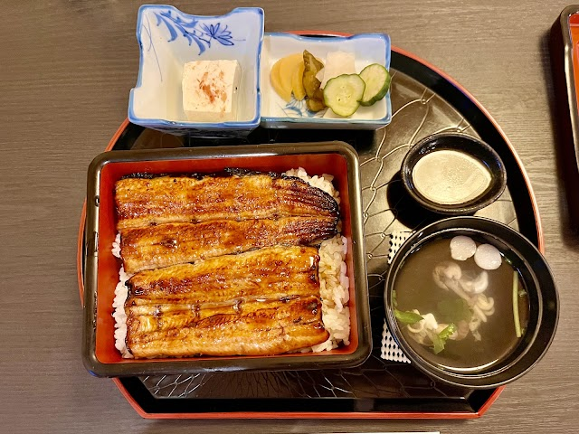
| 営業時間 | 火・水・木・金・土・日 11:00〜14:00, 17:00〜23:00 |
|---|---|
| 定休日 | 月曜 |
| 住所 | 千葉県千葉市若葉区桜木４丁目１１−１ |
| 予約 | 可 — ☎ 043-231-2692 ／ 公式サイト |
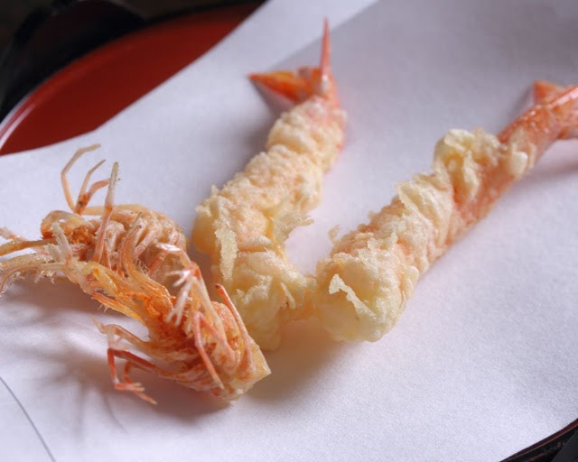
| 営業時間 | 月・火・水・木・金・土 17:00〜23:00 |
|---|---|
| 定休日 | 日曜 |
| 住所 | 千葉県千葉市中央区富士見２丁目９−１３ |
| 予約 | 可 — ☎ 050-5485-6327 ／ 公式サイト |
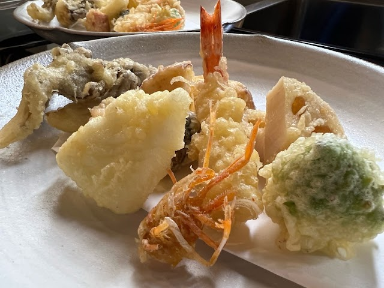
| 営業時間 | 月・火・水・木・金・土 11:30〜13:30, 17:30〜22:00 ／ 日 11:30〜13:30, 17:30〜21:30 |
|---|---|
| 定休日 | なし(要最終確認) |
| 住所 | 千葉県千葉市中央区新町１５−５ ＪＫ大友ビル 3階 |
| 予約 | 可 — ☎ 043-441-6161 ／ 公式サイト |
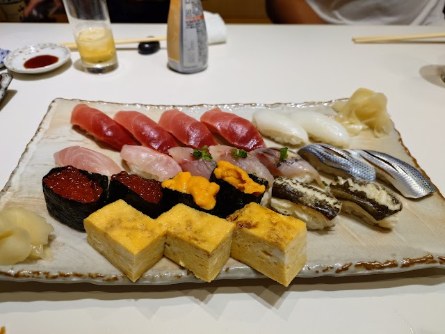
| 営業時間 | 月・火・木・金 11:00〜13:00, 16:30〜21:30 ／ 土 11:00〜13:00, 16:00〜21:30 ／ 日 16:00〜21:30 |
|---|---|
| 定休日 | 水曜 |
| 住所 | 千葉県千葉市中央区中央区院内１丁目１４−７ Ｋ＆Ｉビルディング k&iビル 1F |
| 予約 | 可 — ☎ 043-216-2111 ／ 公式サイト |
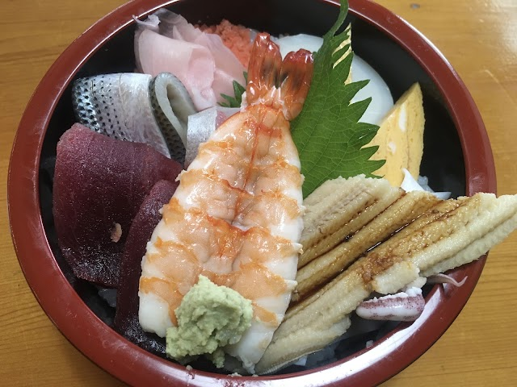
| 営業時間 | 月・火・木・金 11:30〜14:30, 16:00〜21:00 ／ 土・日 11:30〜21:00 |
|---|---|
| 定休日 | 水曜 |
| 住所 | 千葉県千葉市花見川区検見川町３丁目３１６−２２ |
| 予約 | 可 — ☎ 043-272-1283 ／ 公式サイト |
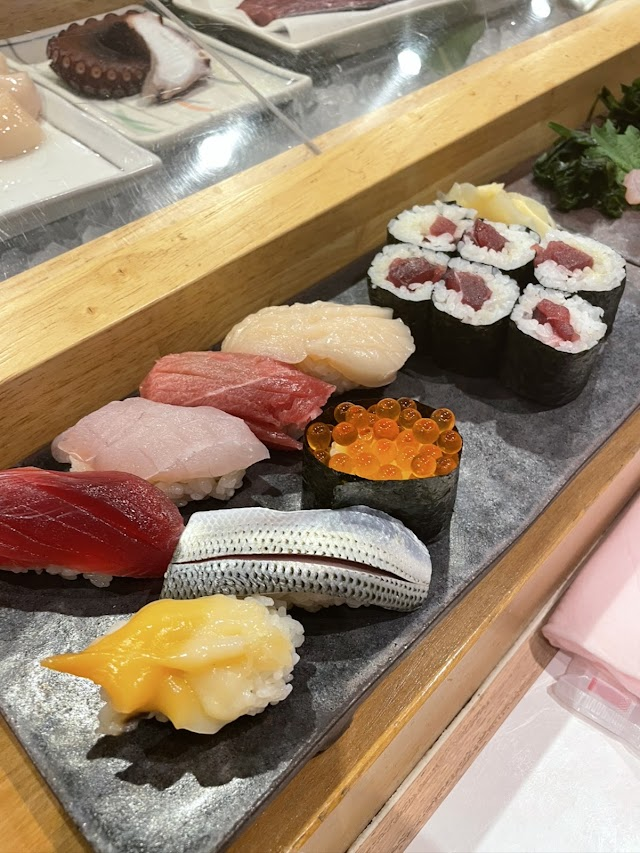
| 営業時間 | 水・木・金・土・日 17:30〜22:00 |
|---|---|
| 定休日 | 月・火曜 |
| 住所 | 千葉県千葉市稲毛区小仲台２丁目５−２ 大越ビル 2F |
| 予約 | 可 — ☎ 043-253-2589 |
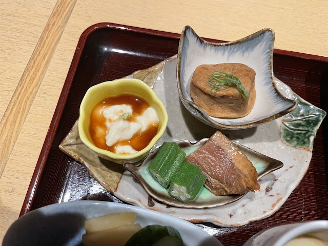
| 営業時間 | 月・火・金・土・日 11:30〜13:30, 17:30〜22:00 ／ 木 17:30〜22:00 |
|---|---|
| 定休日 | 水曜 |
| 住所 | 千葉県千葉市緑区おゆみ野６丁目２７−７ バルヴィニ 1F |
| 予約 | 可 — ☎ 043-293-1270 ／ 公式サイト |
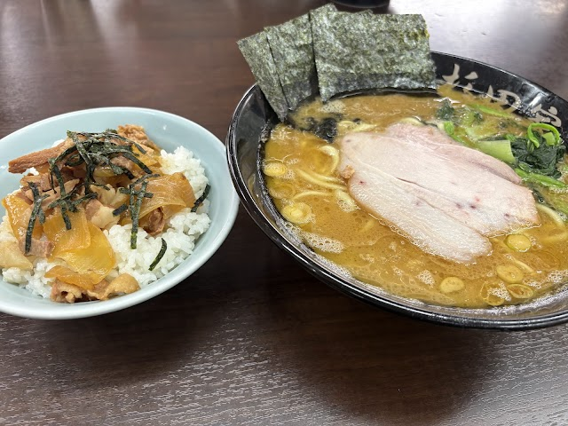
| 営業時間 | 火・水・木・金・土・日 5:00〜22:30 |
|---|---|
| 定休日 | 月曜 |
| 住所 | 千葉県千葉市中央区祐光４丁目１７−７ |
| 予約 | 要確認 — ☎ 043-441-8008 ／ 公式サイト |
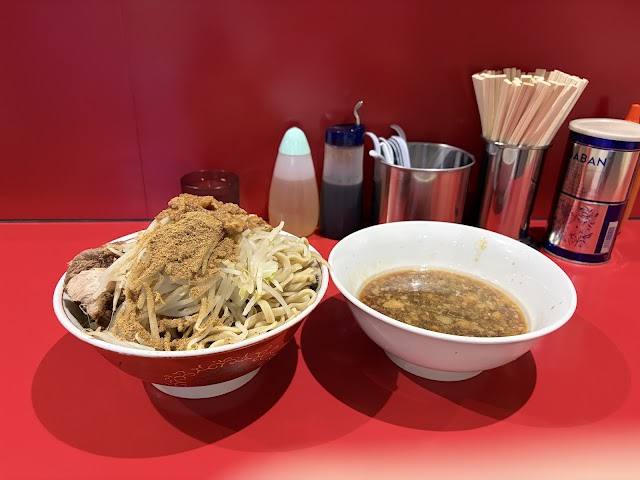
| 営業時間 | 月・火・水・木・金・土 11:00〜14:30, 17:00〜21:30 |
|---|---|
| 定休日 | 日曜 |
| 住所 | 千葉県千葉市中央区中央１丁目７−８ |
| 予約 | 要確認 — 公式サイト |
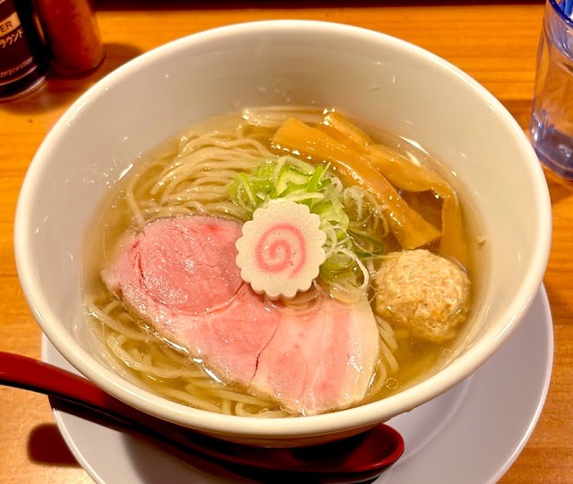
| 営業時間 | 月・火・水・金 11:00〜14:00, 17:30〜22:30 ／ 土・日 11:00〜14:00 |
|---|---|
| 定休日 | 木曜 |
| 住所 | 千葉県千葉市中央区春日２丁目２６−９ |
| 予約 | 要確認 — 公式サイト |
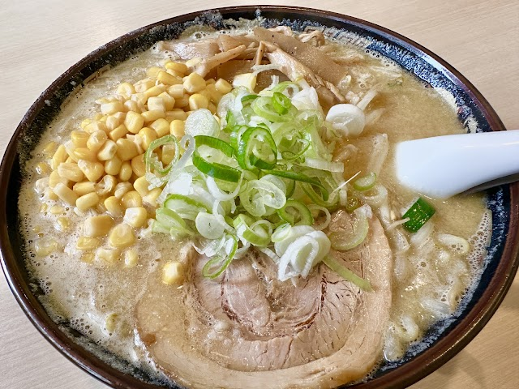
| 営業時間 | 月・火・木・金・土・日 11:00〜3:00 |
|---|---|
| 定休日 | 水曜 |
| 住所 | 千葉県千葉市花見川区武石町１丁目242 1 |
| 予約 | 要確認 — ☎ 043-306-8282 ／ 公式サイト |
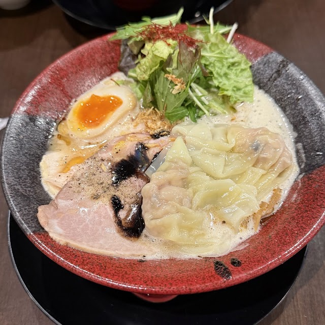
| 営業時間 | 月・火・木・金・土・日 11:00〜14:30, 18:00〜21:30 |
|---|---|
| 定休日 | 水曜 |
| 住所 | 千葉県千葉市稲毛区小仲台１丁目６−２１ |
| 予約 | 要確認 — 公式サイト |
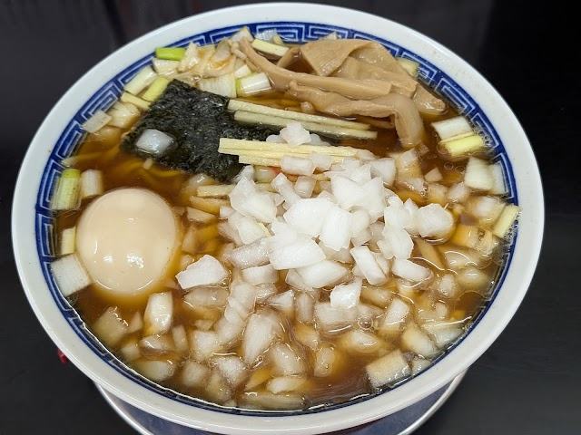
| 営業時間 | 月・火・水・木・金・土・日 11:00〜15:00 |
|---|---|
| 定休日 | なし(要最終確認) |
| 住所 | 千葉県千葉市若葉区上泉町６１６−４ 字堂地６１６−４ |
| 予約 | 要確認 — ☎ 043-312-0081 ／ 公式サイト |
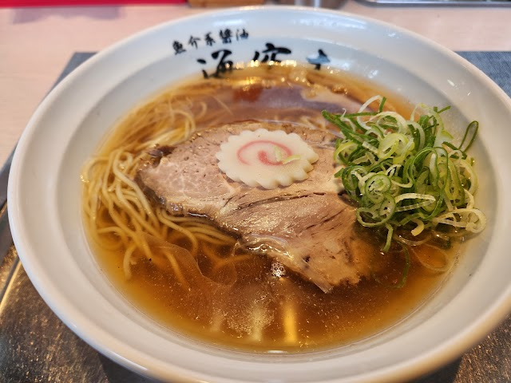
| 営業時間 | 月・火・水・木・金・土・日 11:30〜20:00 |
|---|---|
| 定休日 | なし(要最終確認) |
| 住所 | 千葉県千葉市若葉区都賀の台４丁目５−１５ |
| 予約 | 要確認 — ☎ 043-251-6117 ／ 公式サイト |
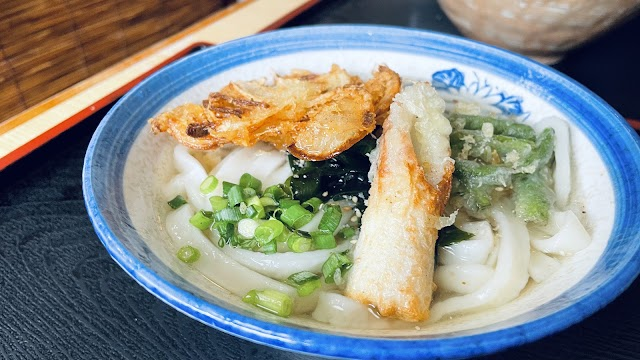
| 営業時間 | 月・火・水・木・金・土 11:30〜14:30 |
|---|---|
| 定休日 | 日曜 |
| 住所 | 千葉県千葉市稲毛区轟町１丁目１６−６ |
| 予約 | 要確認 |
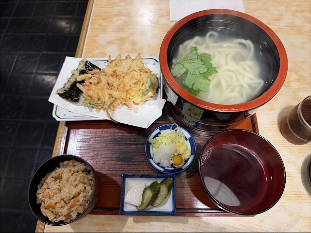
| 営業時間 | 月・火・水・金・土・日 11:00〜14:30, 17:00〜21:00 |
|---|---|
| 定休日 | 木曜 |
| 住所 | 千葉県千葉市花見川区南花園２丁目５−１９ 新富国際ビル １階 |
| 予約 | 要確認 — ☎ 043-272-5426 |
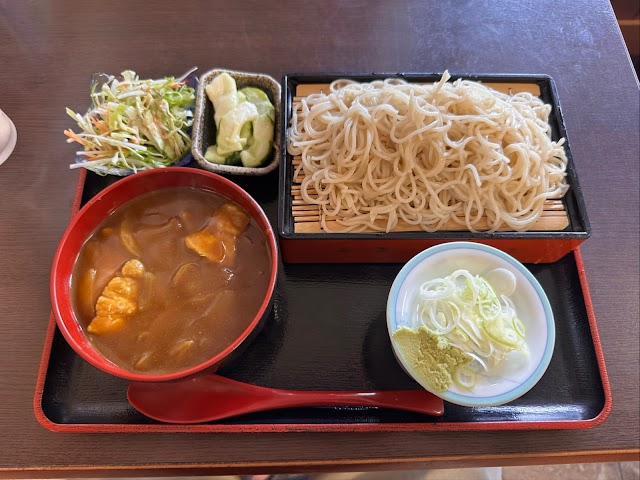
| 営業時間 | 月・水・木・金・土・日 11:00〜14:20, 17:00〜19:20 |
|---|---|
| 定休日 | 火曜 |
| 住所 | 千葉県千葉市中央区都町１丁目３８−８ |
| 予約 | 要確認 — ☎ 043-231-1978 ／ 公式サイト |
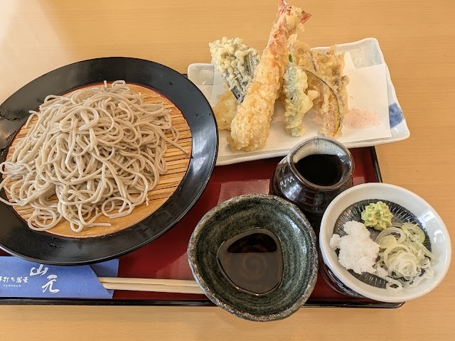
| 営業時間 | 水・木 11:00〜15:00 ／ 金・土・日 11:00〜15:00, 17:00〜20:00 |
|---|---|
| 定休日 | 月・火曜 |
| 住所 | 千葉県千葉市美浜区磯辺４丁目２−５ |
| 予約 | 要確認 — ☎ 043-307-9555 |
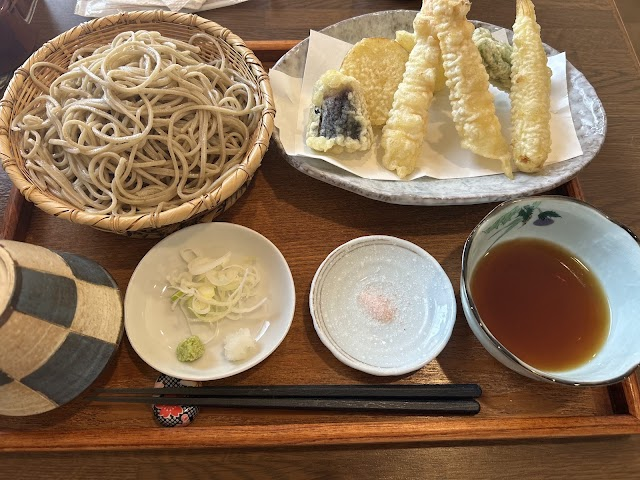
| 営業時間 | 月・木・金・土・日 11:30〜15:00, 17:00〜20:30 |
|---|---|
| 定休日 | 火・水曜 |
| 住所 | 千葉県千葉市緑区あすみが丘２丁目１３−１７ |
| 予約 | 要確認 — ☎ 043-295-2637 |
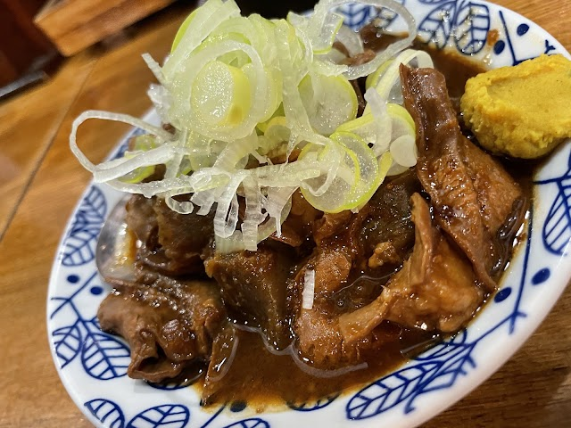
| 営業時間 | 火・水・木・金 14:00〜23:00 ／ 土・日 11:00〜23:00 |
|---|---|
| 定休日 | 月曜 |
| 住所 | 千葉県千葉市中央区富士見２丁目８−１５ |
| 予約 | 可 — ☎ 050-5485-2000 ／ 公式サイト |
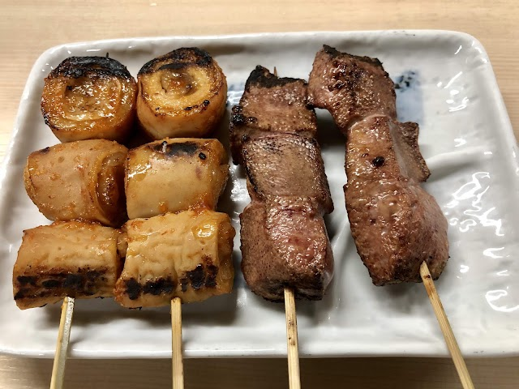
| 営業時間 | 火・水・木・金・土 17:00〜21:00 |
|---|---|
| 定休日 | 月・日曜 |
| 住所 | 千葉県千葉市中央区富士見２丁目１８−５ 2 ＭＤビル |
| 予約 | 要確認 — ☎ 043-224-6588 |
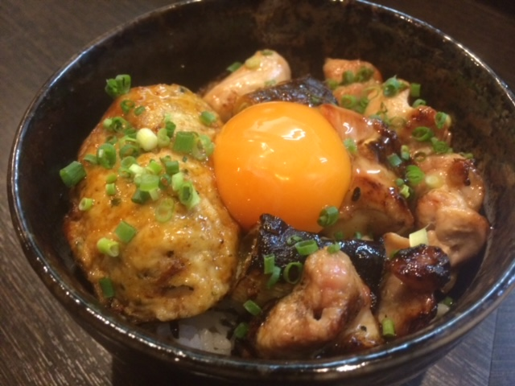
| 営業時間 | 月・火・木・金・土 17:00〜3:00 ／ 日 17:00〜0:00 |
|---|---|
| 定休日 | 水曜 |
| 住所 | 千葉県千葉市中央区栄町２４−１０ |
| 予約 | 可 — ☎ 043-304-5335 ／ 公式サイト |
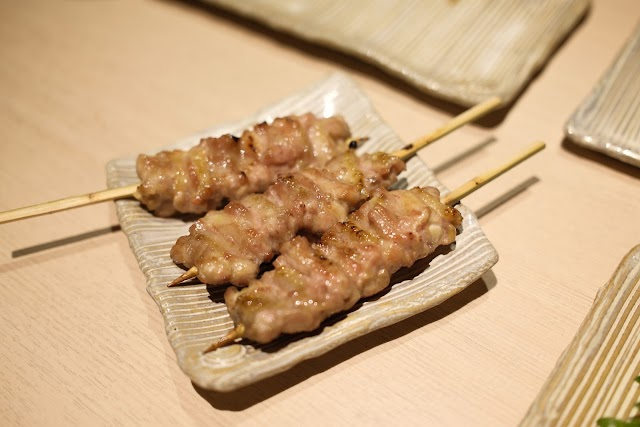
| 営業時間 | 月・火・水・木・金・土 17:00〜23:00 |
|---|---|
| 定休日 | 日曜 |
| 住所 | 千葉県千葉市中央区栄町３８−１ ＹＫ１１ビル |
| 予約 | 可 — ☎ 043-445-8989 ／ 公式サイト |
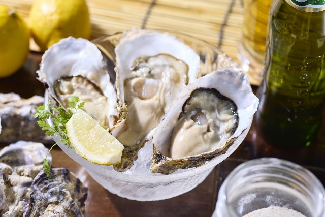
| 営業時間 | 月・火・水・木・金 14:00〜22:00 ／ 土・日 12:00〜22:00 |
|---|---|
| 定休日 | なし(要最終確認) |
| 住所 | 千葉県千葉市中央区栄町３７−１０ |
| 予約 | 可 — ☎ 043-305-5094 ／ 公式サイト |
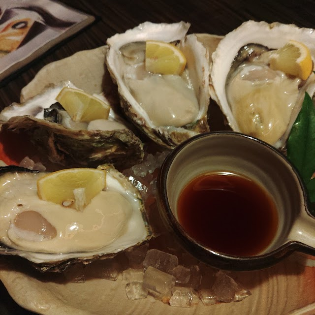
| 営業時間 | 月・火・水・木・金・土 17:00〜0:00 |
|---|---|
| 定休日 | 日曜 |
| 住所 | 千葉県千葉市中央区富士見２丁目９−２ プライム 8 4F |
| 予約 | 可 — ☎ 050-5486-1034 ／ 公式サイト |
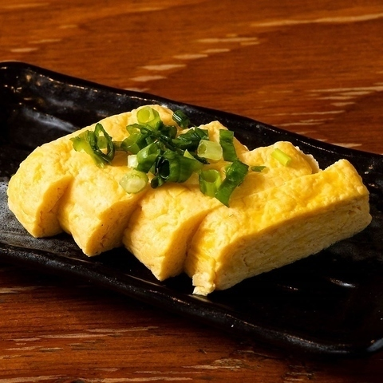
| 営業時間 | 月・火・水・木・金 16:00〜4:00 ／ 土・日 12:00〜4:00 |
|---|---|
| 定休日 | なし(要最終確認) |
| 住所 | 千葉県千葉市中央区富士見２丁目１０−１１ Wtc千葉富士見ビル 1,2階 ピーアイ |
| 予約 | 要確認 — ☎ 043-445-7676 ／ 公式サイト |
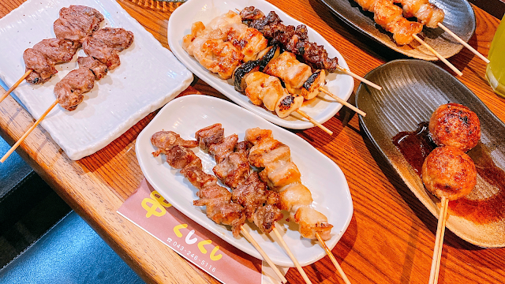
| 営業時間 | 火・水・木・金 17:00〜22:00 ／ 土 16:30〜22:00 |
|---|---|
| 定休日 | 月・日曜 |
| 住所 | 千葉県千葉市稲毛区稲毛東３丁目９−１２ |
| 予約 | 可 — ☎ 043-246-5116 ／ 公式サイト |
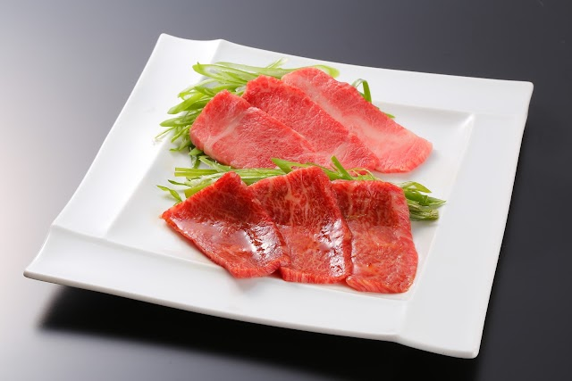
| 営業時間 | 月・火・水・木・金 11:00〜22:00 ／ 土・日 10:30〜22:00 |
|---|---|
| 定休日 | なし(要最終確認) |
| 住所 | 千葉県千葉市稲毛区穴川３丁目５−１０２−７ |
| 予約 | 可 — ☎ 043-254-4129 ／ 公式サイト |
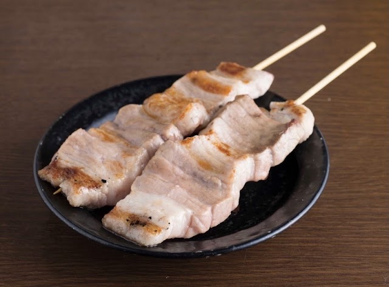
| 営業時間 | 月・火・水・木 16:00〜22:30 ／ 金 16:00〜23:30 ／ 土 15:00〜23:30 ／ 日 15:00〜22:30 |
|---|---|
| 定休日 | なし(要最終確認) |
| 住所 | 千葉県千葉市花見川区幕張本郷６丁目２６−１０ ＴＯＺＯビル |
| 予約 | 可 — ☎ 043-276-7631 ／ 公式サイト |
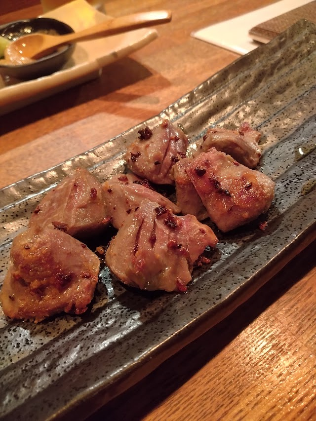
| 営業時間 | 火・水・木・金・土 17:30〜23:30 ／ 日 17:30〜22:30 |
|---|---|
| 定休日 | 月曜 |
| 住所 | 千葉県千葉市緑区おゆみ野３丁目１３−９ |
| 予約 | 可 — ☎ 043-293-8829 ／ 公式サイト |
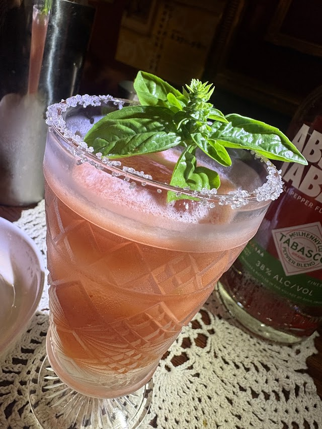
| 営業時間 | 月・火・木・金・土・日 18:00〜1:00 |
|---|---|
| 定休日 | 水曜 |
| 住所 | 千葉県千葉市中央区新宿１丁目８−５ サンハイツ千葉 |
| 予約 | 可 — ☎ 043-309-6151 ／ 公式サイト |
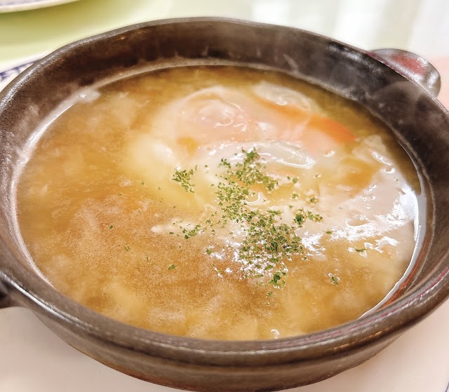
| 営業時間 | 火・水・木・金・土・日 11:30〜13:30, 18:00〜21:00 |
|---|---|
| 定休日 | 月曜 |
| 住所 | 千葉県千葉市中央区登戸１丁目３−１ 高橋ビル |
| 予約 | 可 — ☎ 043-246-6545 ／ 公式サイト |
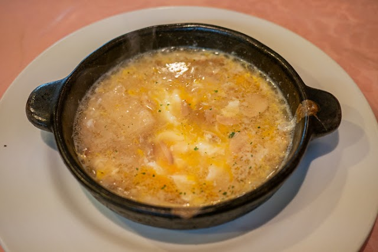
| 営業時間 | 火・水・木・金・土・日 11:20〜14:30, 18:00〜21:00 |
|---|---|
| 定休日 | 月曜 |
| 住所 | 千葉県千葉市美浜区幸町１丁目１８−１ |
| 予約 | 可 — ☎ 043-244-9989 |
| 営業時間 | 月・水・木・金・土・日 17:30〜21:30 |
|---|---|
| 定休日 | 火曜 |
| 住所 | 千葉県千葉市中央区新田町３５−８ 山本ビル 102 |
| 予約 | 可 — ☎ 043-244-9922 ／ 公式サイト |
| 営業時間 | 月・火・水・木・金 11:00〜14:30 ／ 土 11:00〜14:00, 17:00〜20:00 ／ 日 11:00〜14:00 |
|---|---|
| 定休日 | なし(要最終確認) |
| 住所 | 千葉県千葉市中央区中央４丁目３−５ カンガルービル 1階 |
| 予約 | 可 — ☎ 043-305-5985 ／ 公式サイト |
| 営業時間 | 月・火・水・木・金・土 17:30〜1:00 |
|---|---|
| 定休日 | 日曜 |
| 住所 | 千葉県千葉市中央区栄町３１−８ |
| 予約 | 可 — ☎ 043-224-1916 ／ 公式サイト |
| 営業時間 | 月・火・水・木・金・土 11:30〜19:00 |
|---|---|
| 定休日 | 日曜 |
| 住所 | 千葉県千葉市中央区弁天１丁目２０−５ 山崎ビル 106 |
| 予約 | 要確認 — ☎ 043-305-5855 ／ 公式サイト |
| 営業時間 | 月・火・水・木・金・土 11:30〜15:00, 18:00〜22:00 |
|---|---|
| 定休日 | 日曜 |
| 住所 | 千葉県千葉市稲毛区小仲台２丁目８−１４ サンブールＣ.Ｂ小仲台 2F |
| 予約 | 可 — ☎ 043-441-5754 ／ 公式サイト |
| 営業時間 | 月・火・水・木・金・土・日 10:30〜21:30 |
|---|---|
| 定休日 | なし(要最終確認) |
| 住所 | 千葉県千葉市花見川区検見川町１丁目１０６−１６ |
| 予約 | 可 — ☎ 043-271-0581 ／ 公式サイト |
| 営業時間 | 火・水・木・日 11:00〜14:30, 17:00〜21:00 ／ 金・土 11:00〜14:30, 17:00〜22:00 |
|---|---|
| 定休日 | 月曜 |
| 住所 | 千葉県千葉市花見川区幕張町５丁目４６５−１−２０３ |
| 予約 | 可 — ☎ 043-400-2232 ／ 公式サイト |
| 営業時間 | 11:00〜14:00／18:00〜24:00 |
|---|---|
| 定休日 | 火曜 |
| 住所 | 千葉県千葉市若葉区みつわ台５丁目２５−７ |
| 予約 | 可 — ☎ 090-3134-9910 ／ 公式サイト |
| 営業時間 | 月・木・金・土・日 11:00〜17:00 |
|---|---|
| 定休日 | 火・水曜 |
| 住所 | 千葉県千葉市緑区おゆみ野中央１丁目１２−１ |
| 予約 | 可 — ☎ 043-293-1022 ／ 公式サイト |
| 営業時間 | 火・水・木・金・土・日 11:00〜15:00, 17:30〜22:00 |
|---|---|
| 定休日 | 月曜 |
| 住所 | 千葉県千葉市美浜区若葉３丁目２−１６ イオンスタイル幕張ベイパークヴィレッジ ２ |
| 予約 | 可 — ☎ 043-308-7134 ／ 公式サイト |
| 営業時間 | 月・火・水・木・金 8:00〜18:00 |
|---|---|
| 定休日 | 土・日曜 |
| 住所 | 千葉県千葉市中央区中央４丁目１３−１３ 吾妻ビル 402 |
| 予約 | 要確認 — ☎ 043-227-8035 |
| 営業時間 | 火・水・木・金・土・日 9:30〜20:00 |
|---|---|
| 定休日 | 月曜 |
| 住所 | 千葉県千葉市中央区富士見２丁目１４−７ |
| 予約 | 要確認 — ☎ 043-225-4625 |
| 営業時間 | 月・火・木・金・土 10:00〜20:00 |
|---|---|
| 定休日 | 水・日曜 |
| 住所 | 千葉県千葉市中央区弁天２丁目１３−２２ 金古ビル 102 |
| 予約 | 要確認 — 公式サイト |
| 営業時間 | 月・火・水・木・金・土 10:00〜18:00 |
|---|---|
| 定休日 | 日曜 |
| 住所 | 千葉県千葉市中央区富士見２丁目１２−１ 虎屋ビル |
| 予約 | 要確認 — ☎ 043-222-2469 ／ 公式サイト |
| 営業時間 | 月・火・水・木・金・土 8:00〜21:00 |
|---|---|
| 定休日 | 日曜 |
| 住所 | 千葉県千葉市稲毛区稲毛東３丁目１９−２０ |
| 予約 | 要確認 — ☎ 043-247-5900 ／ 公式サイト |
| 営業時間 | 木・金・土・日 10:00〜18:00 |
|---|---|
| 定休日 | 月・火・水曜 |
| 住所 | 千葉県千葉市稲毛区園生町１２２−２ |
| 予約 | 要確認 — ☎ 043-386-3648 ／ 公式サイト |
| 営業時間 | 月・火・金・土・日 11:30〜16:00 |
|---|---|
| 定休日 | 水・木曜 |
| 住所 | 千葉県千葉市若葉区野呂町１５８３−１８７ |
| 予約 | 可 — ☎ 0120-428-422 ／ 公式サイト |
| 営業時間 | 水・木・金・土・日 8:00〜19:00 |
|---|---|
| 定休日 | 月・火曜 |
| 住所 | 千葉県千葉市緑区おゆみ野南６丁目２４−１ |
| 予約 | 要確認 — ☎ 043-312-5490 ／ 公式サイト |
| 営業時間 | 月・火・水・木・金・土・日 8:00〜17:00 |
|---|---|
| 定休日 | なし(要最終確認) |
| 住所 | 千葉県千葉市美浜区若葉３丁目１−４０ |
| 予約 | 要確認 — ☎ 080-4801-6632 ／ 公式サイト |
| 営業時間 | 火・水・木・金・土・日 10:00〜18:30 |
|---|---|
| 定休日 | 月曜 |
| 住所 | 千葉県千葉市美浜区高洲１丁目１６−５５ 羽鳥ビル 1階 |
| 予約 | 要確認 — ☎ 043-205-4702 ／ 公式サイト |
| 営業時間 | 月・火・水・木・金・土・日 10:00〜20:00 |
|---|---|
| 定休日 | なし(要最終確認) |
| 住所 | 千葉県千葉市美浜区ひび野２丁目１１０ |
| 予約 | 要確認 — ☎ 043-350-5020 ／ 公式サイト |
本ガイドは個人利用目的で作成。掲載情報は2026年8月時点の調査に基づく。写真出典: Google Maps投稿写真(©各投稿者/Google)。